2024-10-31
数理逻辑（2024SE）
命题逻辑
合式公式的递归定义
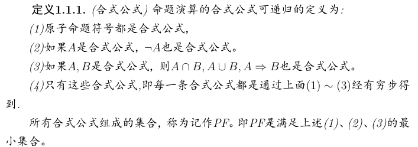
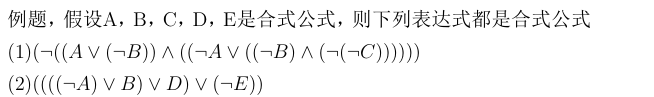
- ⊢
⊢ is an assertion. It IS NOT necessarily correct and a specific deduction model must be given to make this assertion.
E.g. Sequent A, B ⊢ C, D means that under current deduction model, if both A and B are true, then either C or D is true. This assertion may be correct.
And under natural deduction, A ⊢ B and ⊢ A→B are the same.
- ⊨
⊨ is a semantic entailment symbol used to check the relationship among certain variables under every logic model. It’s more like a universal version of ⊢, and it IS NOT necessarily correct as well.
E.g. I’ve just had my meal ⊨ Something just traveled to my stomach through my throat
This semantic entailment isn’t necessarily correct, for there might be some creature using other holes for eating instead of the one we called mouth.
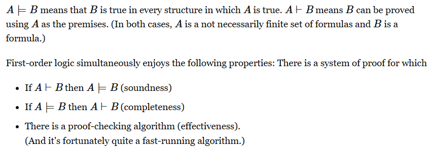
初始段定义
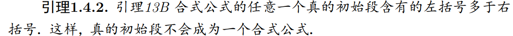
归纳与递归
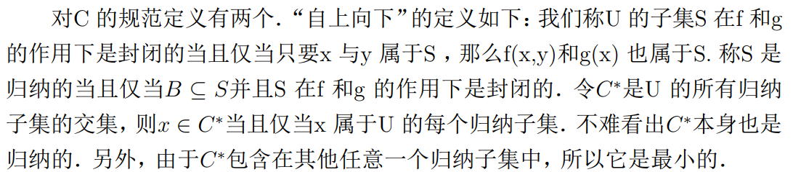
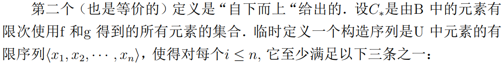
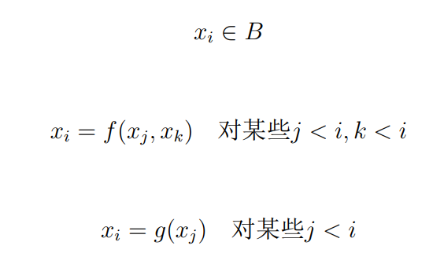
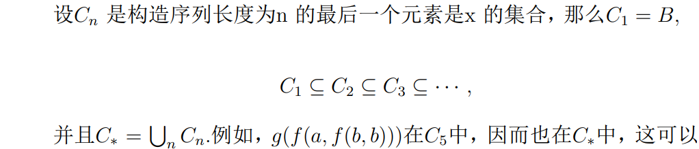
关于以上两个定义的等价性证明如下：
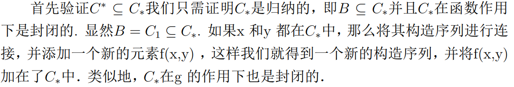
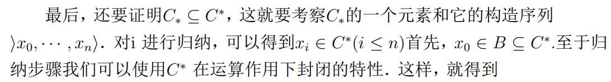
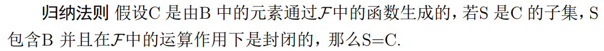
关于递归
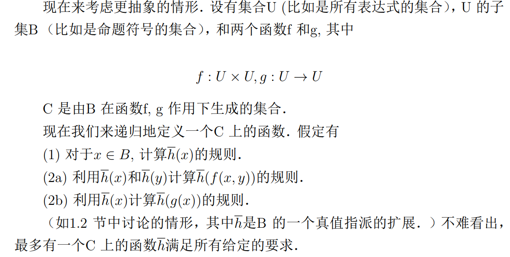
一阶逻辑
数理逻辑初步：命题逻辑、一阶逻辑和二阶逻辑_一阶逻辑和二阶逻辑的区别-CSDN博客
一阶逻辑（语言）的字母表
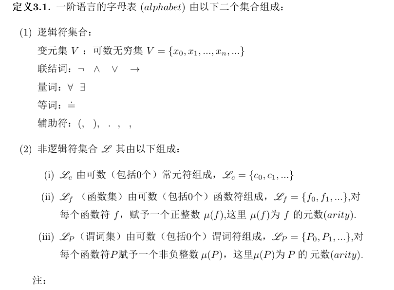
一阶逻辑的特征例子（与自然语言相互翻译）
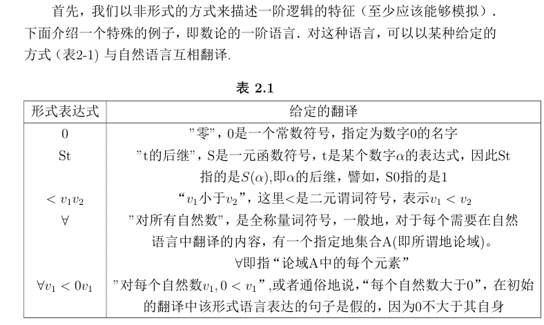
本章节使用了简化版的命题连接符号，即Hilton体系（忘了叫啥了）
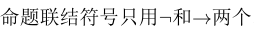
表达式是符号的任意有限序列，大多数的表达式是没有意义的 ，但是项和合式公式是具有特定意义的表达式
项是语言中的名词和代词，是可以翻译成对象名称的表达式，原子公式是指那些没有使用连接符号和量词符号的合式公式
项（term）
给定一个一阶逻辑语言L，定义L中的项为：
每个变元vi 是项
令V是所有变元组成的集合
每个L中的常数符号是项
如果t1,…,tn 是项并且 f 是 L 中 n 元函数符号，那么
f t1 . . . tn 也是项
令T 是所有项组成的集合
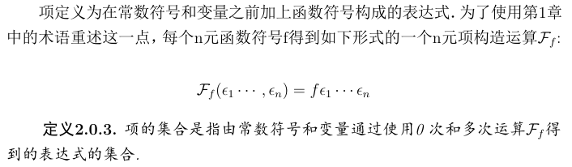
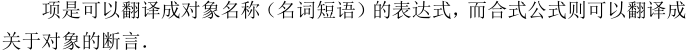
小明是一位数学家
math(小明)。其中math(x)表示：x是一位数学家。
谓词：
一个含有变量的命题，例如上述math(x)。
谓词符号：
就是上述的math,die之类的。只是通常我们习惯用大写表示比如：F,G,H，但是随便用也行。
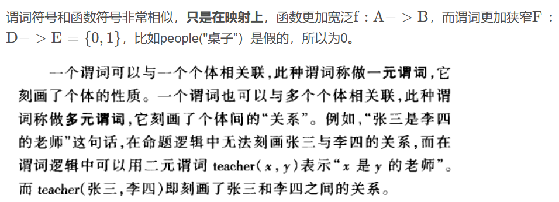
合式公式定义：
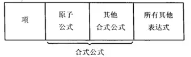
原子公式定义
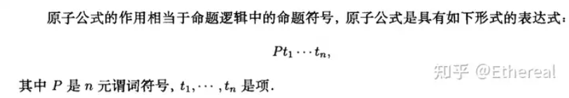

关于自由变量（自由出现）定义：

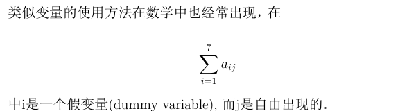
由于只用两个逻辑符号，所以需要缩写：
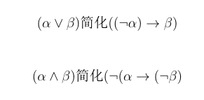
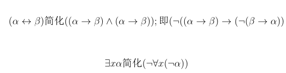
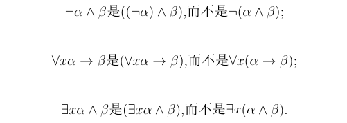
与命题逻辑不同
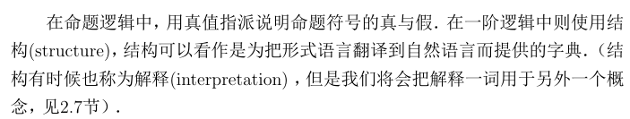
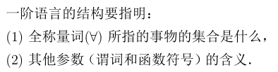
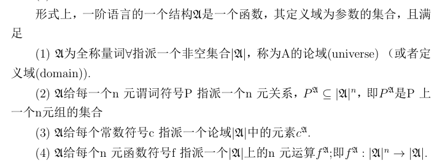
s(x|d)
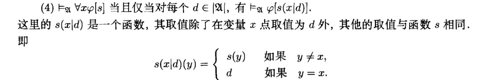
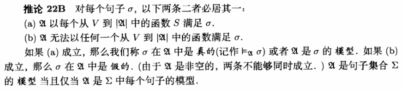
结构和谓词一起定义计作
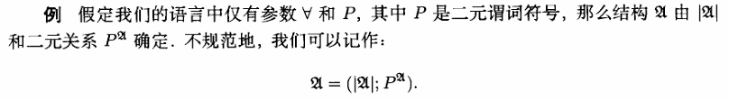
逻辑蕴涵
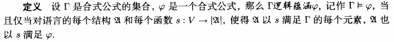
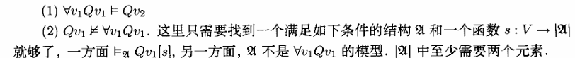
规则T：
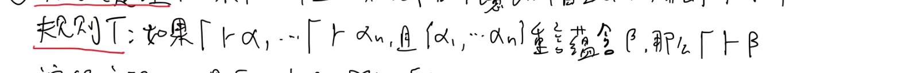
概化定理
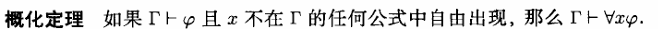
演绎定理
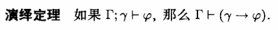
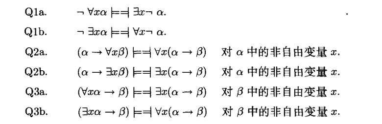
可靠性定理
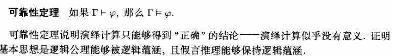
完备性定理
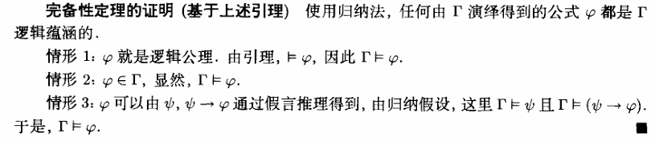
替换引理
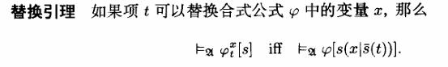
哥德尔完备性定理
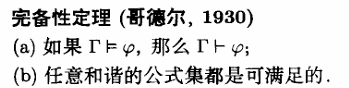
和谐的
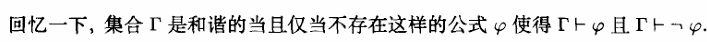